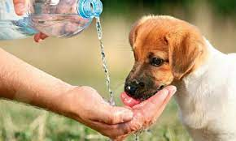
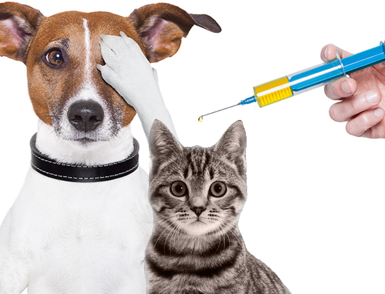
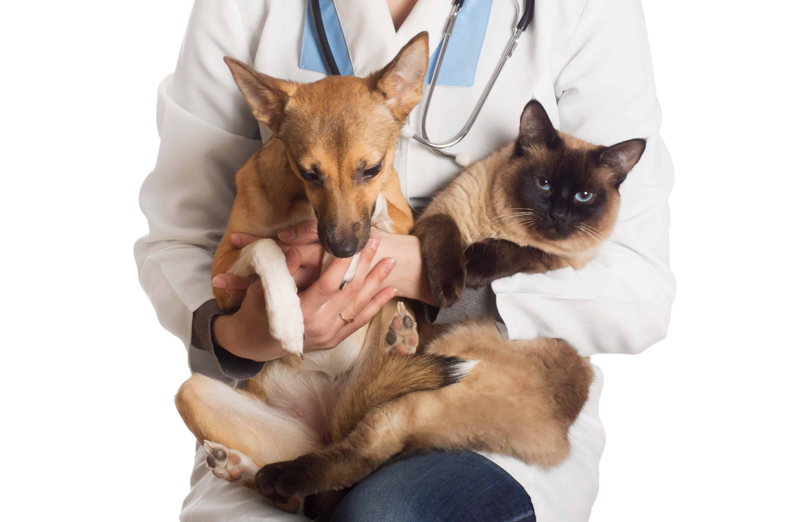

INÍCIO
INSTITUIÇÕES
SOBRE NÓS
INFORMAÇÕES

GUIA DE COMO CUIDAR BEM DE CACHORROS
Aprenda a como dar os melhores cuidados para seu dog.
Ler Mais
TUDO SOBRE A RAIVA CANINA
Qual o risco de pegar e como proteger desta doença.
Ler Mais

A IMPORTÂNCIA DA VACINAÇÃO
Se informe sobre a importância da vacinação nos animais.
Ler Mais

A CASTRAÇÃO EM CÃES E GATOS
A castração é uma das medidas mais importantes para controle populacional de cães e gatos.
Ler Mais